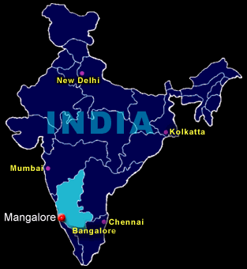
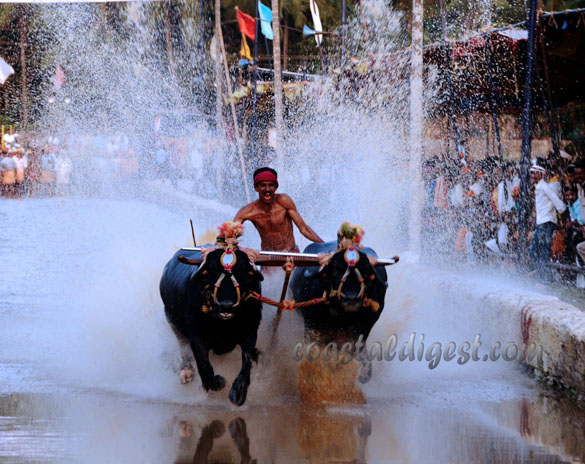
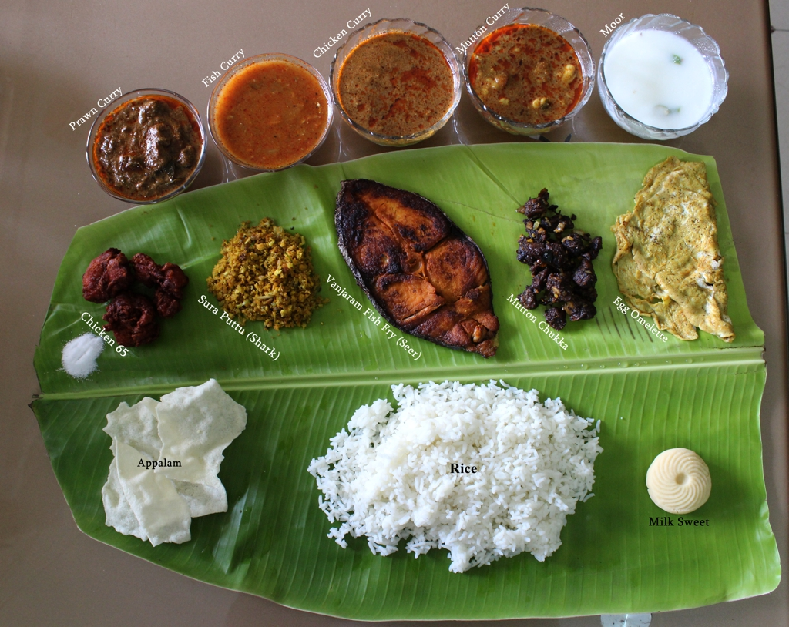

ABOUT MANGALORE
LOCATION

Hemmed by the Arabian Sea in the west, Western Ghats in the east, Nethravathi River in the south and Kulur River in the North, Mangalore
Mangalore lies 353km from the capital city of Karnataka- Bangalore. The urban agglomeration of Mangalore stretches over more than 30 kilometres from Ullal in the South to Surathkal in the North. The city stretches to Vamanjoor, Deralakatte, Padil, and Bajpe in the east.
The city is well connected by road, rail and air. Mangalore International Airport connects major cities in India and the Middle East.
Mangalore developed in earlier times as a harbour in the Arabian Sea and then rose to become a major port in India. The New Mangalore Port is an all-weather port located at Panambur in Mangalore.
It is the only major port in the state of Karnataka with the deepest harbour on the west coast. It is a point of departure for maritime traffic along the Malabar Coast.
The port accounts for about 75% exports of major commodities like coffee and cashew in India.
CULTURE
 Mangalore is one of the country’s most multi-cultural non-metro cities. It is the largest city in Coastal Karnataka and Malnad areas.
This city boasts of its amalgamation of culture and languages like the Tuluva community, Konkani community and the Beary or Byari community.
Despite the presence of the different communities, the city prides itself when it comes to coexistence of communities and peaceful harmonious living.
Mangalore is one of the country’s most multi-cultural non-metro cities. It is the largest city in Coastal Karnataka and Malnad areas.
This city boasts of its amalgamation of culture and languages like the Tuluva community, Konkani community and the Beary or Byari community.
Despite the presence of the different communities, the city prides itself when it comes to coexistence of communities and peaceful harmonious living.
Bhootha kola
Bhootha Kola or worshiping the spirit is still prevalent and practiced in Mangalore.
Kambala

The Kambala or the buffalo race is a unique game. This is performed annually in the wet paddy fields of Kadri Kambalghattu.
The kambala is performed as a tribute to the Gods to protect the crops of farmers. Here, a pair of buffalos piloted by a farmer, race in a wet muddy field.
CUISINE

Rightly described as the “Head Chef” in preparation of all types of fish or ‘meenu” curries, Mangalore is famous for its signature dishes. Being a coastal city, fresh fish is its specialty.
The local people devour their favourite fish curry rice. The famous chicken ghee roast or the authentic bunt style kori rotti and Konkani style pathrode and gashi are some of the famous Mangalorean dishes.
Charmuri upkari available at Car street, is “bhel puri in the Mangalorean style”. Also, famous Mangalore cuisine is the Mangalore Buns. These are mildly sweet buns made with ripened bananas.
Natures very own Bonda udha or tengina niru or coconut water is available at almost all street corners and easy on the pocket.